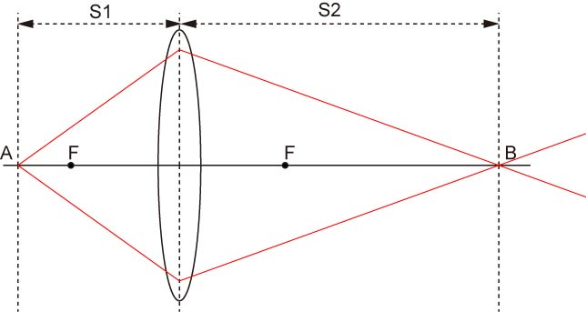
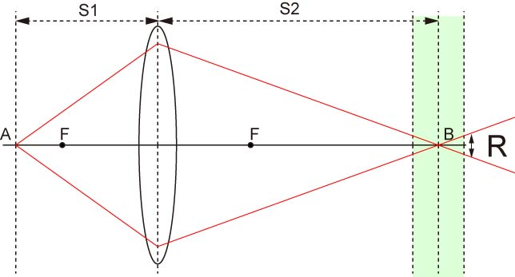
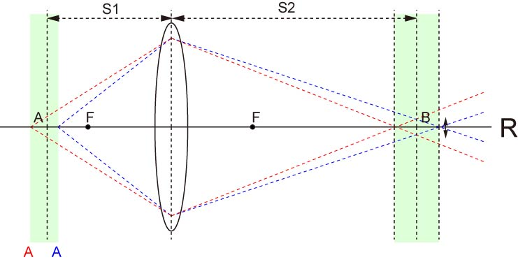

次に，被写界深度について説明しましょう．
これは，カメラでの撮影を考えてもらえるとわかりやすいのですが，
近くから遠くまでピントが合っている写真
ある一定の距離のみピントが合っている写真
とあることがわかります．
たとえば，風景写真などは，遠くの山から，近くの川までピントが合っていますね．
逆に，ポートレート写真などは，人物だけに焦点が合っていて，背景はぼけているものが多いです．
このピント（焦点）のあう範囲のことを被写界深度といいます．
でも，待ってください．レンズの結像においては，1点から発せられた光は，1点に集まる，と説明しました．

なのに，近くから遠くまでピントが合うのはおかしくありませんか？
確かにそうなのですが，レンズの収差などから，1点から発せられたすべての光が1点に集光する，ということは非常に難しいのです．
それに，我々が，焦点が合っている，と感じるのにはある程度の許容範囲があります．
なにもジャスピンでなくてよいのです．

上の図で，R，程度のぼけ程度なら，薄緑のエリアの光を焦点が合っている，とするのです．
この，薄緑の厚みを，被写界深度，と定義します．
では，どの程度の位置の物体が焦点が合うことになるのか，光線を逆に進んでいきましょう．

このように，焦点があう位置は，赤いAから青いA，までの範囲に存在する物体となります．
では，この範囲は何を変化させることによって変わるのでしょう？